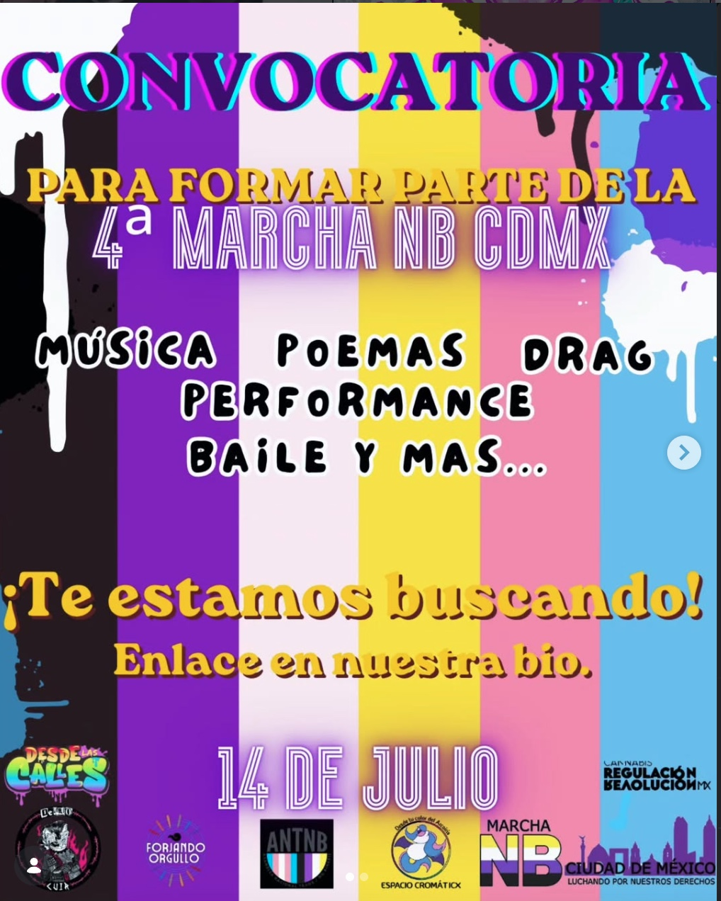

Rectificación de Identidad de Género (Mayores de Edad)
Guía práctica para realizar el trámite administrativo de rectificación de identidad de género en la CDMX para mayores de edad.
Rectificación (Menores de edad)
Pasos detallados para el cambio de nombre y género en actas de menores de edad con acompañamiento legal en CDMX.
Actualización de INE
Todo lo que necesitas saber para actualizar tu credencial para votar tras concluir tu rectificación de identidad

